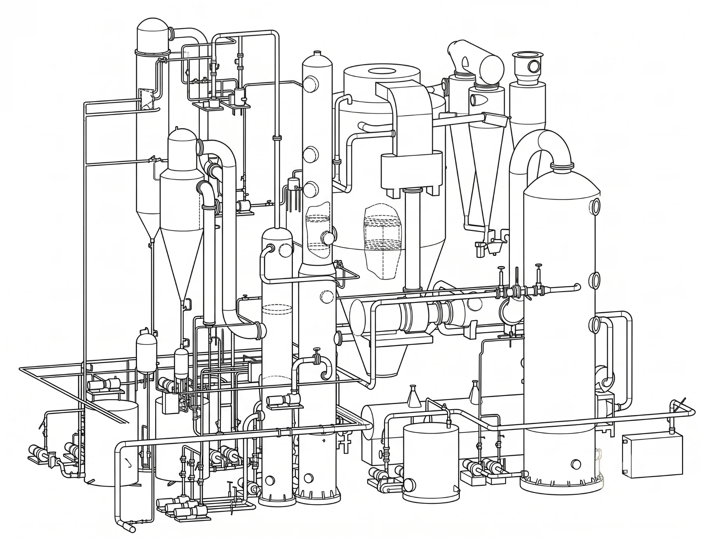
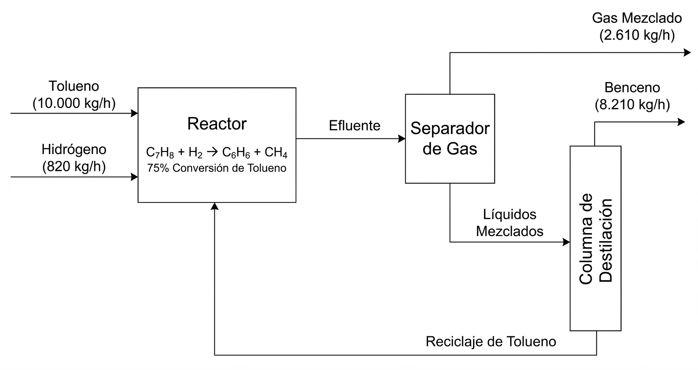
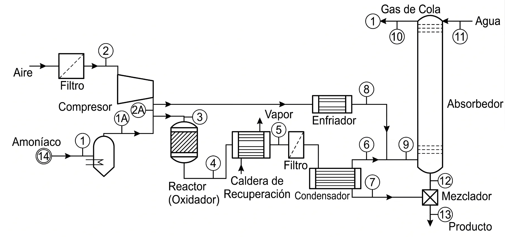
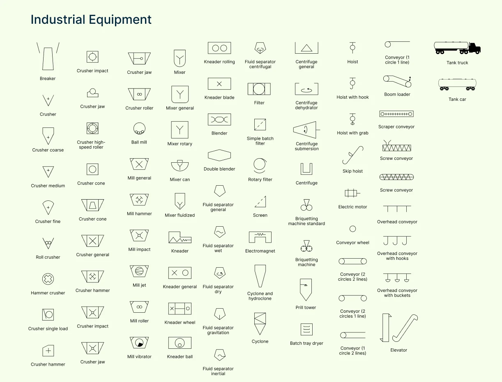
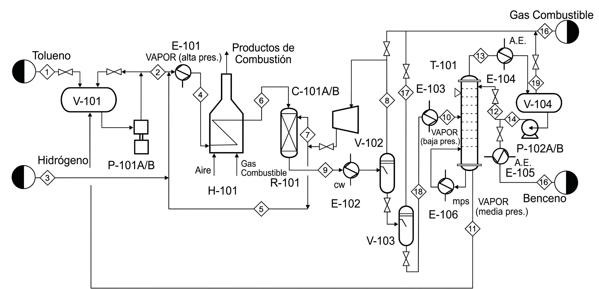
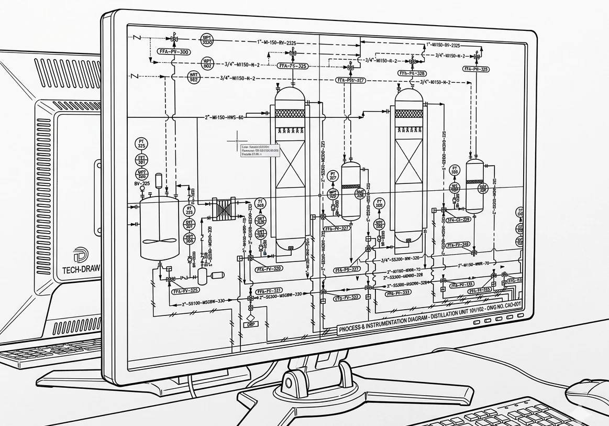
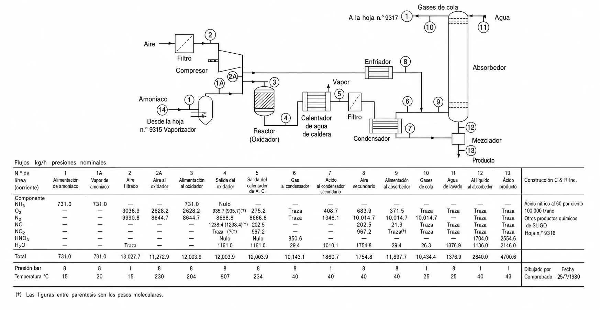

Del diagrama de bloques al P&ID: el lenguaje visual del proceso químico
Comenzaremos con un quiz de 10 minutos para verificar su preparación previa, seguido por una exploración detallada de cada tipo de diagrama y su aplicación práctica. Todos los ejemplos siguen un mismo caso: la unidad de hidrodesulfuración (HDS, área 200) del Manual de diagramas del curso, con los mismos códigos y los mismos números.
Los diagramas de ingeniería son el lenguaje visual universal de nuestra profesión. Permiten una comunicación clara entre ingenieros de distintas culturas, sin que el idioma sea una barrera.
Esta precisión es vital en la industria química, donde un error puede tener consecuencias catastróficas. La claridad no es un detalle estético: es una cuestión de seguridad.
Una planta real esconde cientos de equipos y corrientes. El diagrama es lo que la hace comprensible.
Vista simplificada de las operaciones principales y los flujos generales del proceso.
Incluye todos los equipos principales y los flujos con información técnica.
Detalle completo para construcción, incluyendo instrumentación y control.
La vista que cabe en una diapositiva ejecutiva y que obliga a identificar lo esencial del proceso.

PBD del proceso de hidrodesalquilación de tolueno (Turton et al.). Reactor, separación y destilación con los flujos másicos principales y el reciclo.
Las transformaciones principales de la materia prima. En la HDS: nafta ácida con DBT → mezcla reactiva caliente → efluente con H₂S → nafta dulce y gas ácido → hidrógeno tratado.
Precalentadores, compresor y reactor forman «Reacción»; compresor, enfriador y columna lavadora forman «Lavado con amina».
De izquierda a derecha siguiendo el flujo natural del proceso, minimizando cruces de líneas.
Solo si son críticos para entender el proceso, por ejemplo la regeneración de la amina que recibe la MDEA rica.
Cada bloque debe tener entrada y salida, y el diagrama debe contar una historia coherente y completa.
Eviten estos errores y su PBD comunicará profesionalismo desde el primer vistazo.
El documento de trabajo del ingeniero de proceso: suficientemente detallado para calcular, suficientemente simple para entenderse.
El PFD añade al PBD el detalle necesario para los cálculos de diseño. Donde el PBD de la HDS dice «Reacción», el PFD muestra:
Es el documento de trabajo del ingeniero de proceso, suficientemente detallado para los cálculos pero lo bastante simple para mantener la claridad visual.

PFD de una planta de ácido nítrico. Cada equipo, corriente numerada y conexión queda explícita.

Biblioteca de símbolos de equipos de sólidos de una herramienta de dibujo. Cada biblioteca sigue su convención; la del curso es la de Turton, y el plano la declara en su leyenda.
Fuentes: Turton et al., Analysis, Synthesis, and Design of Chemical Processes, cap. 1, y la norma ISO 10628-2 de símbolos gráficos. Los instrumentos siguen ISA-5.1, que se ve con el P&ID.
Recuerden: están creando un documento que usarán por meses. Inviertan tiempo en hacerlo bien desde el inicio.

PFD profesional (Turton et al., tolueno a benceno): equipos codificados (V-101, E-101, H-101, T-101), corrientes numeradas en rombos y servicios identificados.
C compresor o turbina, E intercambiador de calor, H calentador de fuego directo (horno), P bomba, R reactor, T torre, TK tanque de almacenamiento y V recipiente.
El área de la planta donde está el equipo. Toda la unidad HDS del caso es el área 200: R-201, V-201, T-201. Un tanque del área 300 sería TK-305.
El consecutivo en su clase dentro del área. E-201 a E-204 son los cuatro intercambiadores del área 200, en el sentido del flujo.
Sufijos para equipos idénticos: P-201 A/B/C para tres bombas idénticas en paralelo. En el PFD la de respaldo no se dibuja; en el P&ID sí.
Esta sistematización permite que cualquier ingeniero localice de inmediato un equipo en el proceso y en la planta física. Si su plano sigue otra convención, como K para el compresor, declárela en la leyenda.
En el formato corto del Manual de diagramas, la misma línea es 4"-CS-210. El material depende de lo que lleva la línea: un producto alimenticio pide acero inoxidable sanitario.
El PFD debe cerrar el balance de masa al menos a ±1 %, idealmente a ±0,1 %. No es pedantería académica: un balance que no cierra delata un error de concepto, de cálculo o de dibujo.
¿Por qué ±1 %? En un balance de diseño los números los fija usted: no hay medidores con error, y lo único que separa la entrada de la salida es el redondeo. En una planta en operación, con datos medidos, se toleran diferencias mayores; en un diseño, no.
Usen la conversión y las eficiencias de separación reales, no las ideales, y declárenlas como supuestos (el caso simplifica a propósito con conversión total del DBT, y lo dice). Excel es su aliado: construyan una hoja que verifique automáticamente el cierre del balance.
E-201 usa vapor de media presión (10 a 15 barg, 184 a 201 °C) para llevar la mezcla a 148,9 °C; E-202 necesita el de alta (40 a 50 barg, 252 a 265 °C) para llegar a 249 °C.
E-203 condensa la nafta antes del separador y E-204 retira el calor de compresión antes del lavador. El agua vuelve a menos de 45 °C; muestren suministro y retorno.
C-201 y C-202 son eléctricos y son el consumo eléctrico grande de la unidad, junto con las bombas. Entra directo al costo de operación.
Aire seco y limpio (IA) para la instrumentación y las válvulas de control. Si falla, cada válvula va a su posición segura.
Cada servicio se dibuja con línea más delgada que la de proceso y se nombra con su código y su retorno. Estos servicios pesan en el costo de operación (OPEX): ignorarlos es diseñar una planta que no se puede operar.
Eviten PowerPoint: no está diseñado para diagramas técnicos. Inviertan 2 horas aprendiendo atajos; ahorrarán 20 durante el semestre. Guarden versiones incrementales (PFD_v1, v2, v3).

El control de versiones y el uso de plantillas estandarizadas son hábitos profesionales tan importantes como la herramienta.
En la HDS la tabla lleva ocho componentes: hidrógeno, agua, dibenzotiofeno, bifenilo, H₂S, dos cortes de nafta por punto de ebullición y MDEA. Revísela con tres chequeos: la suma por componente da el total; el peso molecular medio es razonable (corriente 2: kg/kmol, hidrógeno puro), y en una mezcla los flujos se suman (4 = 1 + 2).
En su proyecto, la lista de componentes sale de su propio balance. Usen Excel con fórmulas vinculadas para que los cambios se propaguen.

PFD acompañado de su tabla de corrientes: encabezados claros, unidades explícitas y decimales consistentes.
Su PFD es la referencia única del proyecto, el documento al que volverán constantemente. Esta evolución continua refleja la realidad industrial, donde los PFD se revisan decenas de veces durante un proyecto. En las próximas semanas añadirán:
Detalladas, conforme las calculen.
Las que resulten de sus balances.
Que anticipan el P&ID.
Las que surjan de la simulación en ASPEN Plus.
Mantengan disciplina de actualización: un PFD desactualizado es peor que no tener PFD.
Formato inadecuado: un JPG pixelado e ilegible. Usen siempre PDF vectorial para mantener la calidad.
Actualizarán el PFD con el tamaño de partícula y la potencia de cada molino.
Añadirán la potencia y la presión de descarga, como las de C-201 y C-202 en la HDS.
Incluirán su área y el caudal del servicio, como E-201 a E-204 con MPS, HPS y CW.
Especificarán la presión, las etapas o la altura de empaque y la relación de reflujo.
El PFD es el hilo conductor que une todos estos elementos en un diseño coherente. Inviertan tiempo ahora en hacerlo bien: lo van a usar todo el semestre.